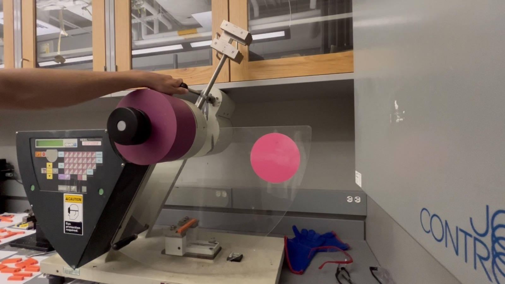

Fracture Energy Analysis of 3D Printed PLA
Investigation for materials science course
Overview
A project investigating the material properties of 3D-printed PLA. PLA parts are everywhere in FDM prototyping since it is very easy to print with, but PLA's fracture behavior — especially the ductile-to-brittle transition across temperature — was not well studied or understood. We sought to investigate this to gain a better understanding of the limitations of PLA in functional prototyping.
Approach
I used ASTM-standard Charpy impact testing to measure fracture energy and characterize the ductile-brittle transition of PLA across a range of temperatures. To understand why the material failed the way it did, our group used Scanning Electron Microscopy to image the fracture surfaces and characterize fractures as ductile or brittle at each temperature.
Gallery


Results
The testing mapped how PLA's fracture energy and failure mode shifted with temperature, showing a clear ductile-brittle transition and distinct fracture surface differences at each regime.